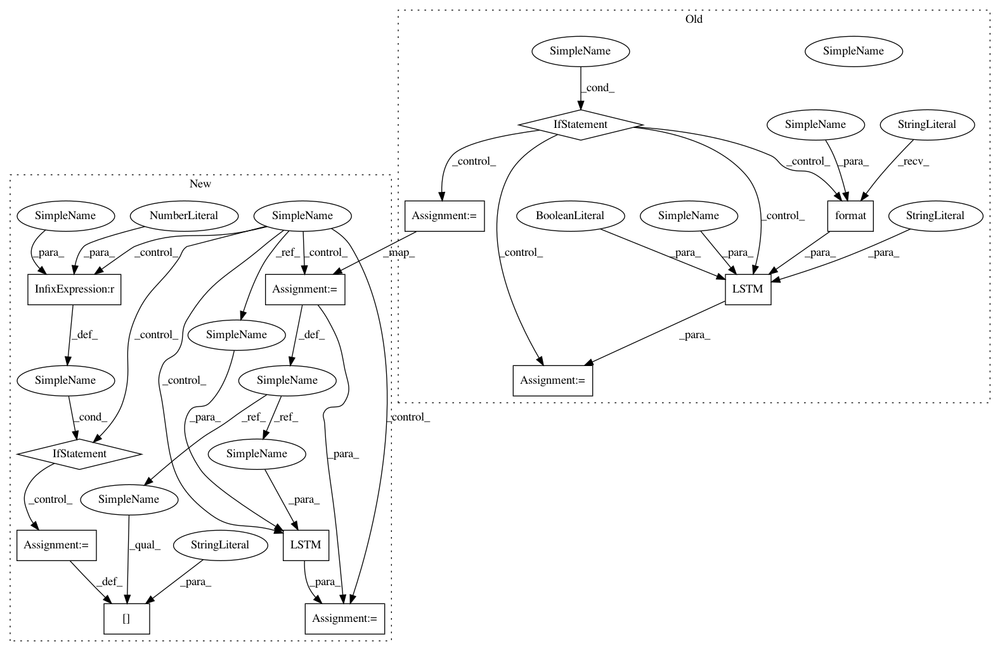

e8ee5ce8baba0330f5b64e36c34b12f52a5ad29e,pyannote/audio/embedding/models.py,ClopiNet,__call__,#ClopiNet#Any#,289
Before Change
// stack (bidirectional) LSTM layers
for i, output_dim in enumerate(self.lstm):
if i:
lstm = LSTM(output_dim,
name="lstm_{i:d}".format(i=i),
return_sequences=True,
activation="tanh")
else:
// we need to provide input_shape to first LSTM
lstm = LSTM(output_dim,
input_shape=input_shape,
name="lstm_{i:d}".format(i=i),
return_sequences=True,
activation="tanh")
// bi-directional LSTM
if self.bidirectional:
lstm = Bidirectional(lstm, merge_mode=self.bidirectional)
// (actually) stack LSTM
After Change
// stack (bidirectional) LSTM layers
for i, output_dim in enumerate(self.lstm):
params = {
"name": "lstm_{i:d}".format(i=i),
"return_sequences": True,
// "go_backwards": False,
// "stateful": False,
// "unroll": False,
// "implementation": 0,
"activation": "tanh",
// "recurrent_activation": "hard_sigmoid",
// "use_bias": True,
// "kernel_initializer": "glorot_uniform",
// "recurrent_initializer": "orthogonal",
// "bias_initializer": "zeros",
// "unit_forget_bias": True,
// "kernel_regularizer": None,
// "recurrent_regularizer": None,
// "bias_regularizer": None,
// "activity_regularizer": None,
// "kernel_constraint": None,
// "recurrent_constraint": None,
// "bias_constraint": None,
// "dropout": 0.0,
// "recurrent_dropout": 0.0,
}
// first LSTM needs to be given the input shape
if i == 0:
params["input_shape"] = input_shape
lstm = LSTM(output_dim, **params)
// bi-directional LSTM
if self.bidirectional:
lstm = Bidirectional(lstm, merge_mode=self.bidirectional)
In pattern: SUPERPATTERN
Frequency: 3
Non-data size: 12
Instances
Project Name: pyannote/pyannote-audio
Commit Name: e8ee5ce8baba0330f5b64e36c34b12f52a5ad29e
Time: 2017-04-24
Author: bredin@limsi.fr
File Name: pyannote/audio/embedding/models.py
Class Name: ClopiNet
Method Name: __call__
Project Name: pyannote/pyannote-audio
Commit Name: e8ee5ce8baba0330f5b64e36c34b12f52a5ad29e
Time: 2017-04-24
Author: bredin@limsi.fr
File Name: pyannote/audio/embedding/models.py
Class Name: TristouNet
Method Name: __call__
Project Name: pyannote/pyannote-audio
Commit Name: e8ee5ce8baba0330f5b64e36c34b12f52a5ad29e
Time: 2017-04-24
Author: bredin@limsi.fr
File Name: pyannote/audio/embedding/models.py
Class Name: TrottiNet
Method Name: __call__